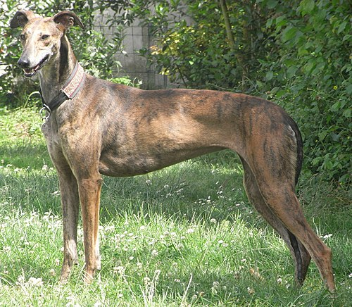

Tiene un físico ligero y estilizado, con patas largas y pecho voluminoso, que le permite alcanzar grandes velocidades. La altura a la cruz suele ser 62-70 cm en los machos y de 60-68 cm en las hembras. La capa típica es de pelo corto, liso y muy fino. Pero existe también la variedad de pelo duro, que presenta pelo áspero y largo, repartido homogéneamente por el cuerpo, con, bigotes y tupé. Los colores más típicos son: barcino o atigrado, negro, barquillo, tostado, canela, amarillo, rojo, blanco, berrendo o pío.
Suele hablarse del parecido entre el galgo y las representaciones caninas del arte egipcio; el galgo probablemente tiene sus principales ancestros en los perros faraónicos egipcios, igual que el podenco. Es probable además que el Vertades romano sea otro de sus antepasados. Lo cierto es que las primeras referencias escritas del galgo ibérico se hallan en el tratado romano del siglo II a. C. Cynegeticus de Arriano de Nicodemia, quien fue cónsul de la Bética.
Denario Romano en el que podemos ver representado un perro tipo galgo
Galgo español
No debe confundirse con Galgo inglés.
El galgo español es una raza de perro española perteneciente a la familia de los lebreles. Originalmente, esta raza fue creada para la caza, sobre todo de liebres, conejos, zorros y jabalíes, pero actualmente se emplea como animal de compañía y para las carreras de galgos.
Desafortunadamente, debido al abandono de muchos de ellos, las carreras de galgos se consideran un acto de crueldad hacia los animales y están prohibidas en varias comunidades autónomas españolas. Asimismo, muchas organizaciones dedicadas a la protección de animales realizan campañas para la adopción de galgos abandonados

Tipo: perro
Tamaño:
Machos: 71-76 cm a la cruz
Hembras: 69-71 cm a la cruz
Peso:
Machos: 30-32 kg
Hembras: 27-30 kg
Pelaje: Corto, suave y liso. Colores: crema, atigrado, leonado, negro, blanco. La variedad de pelo duro también se acepta, pero es muy rara.
Cabeza: Cráneo de anchura reducida, stop ligeramente acentuado, hocico alargado.


.jpg)